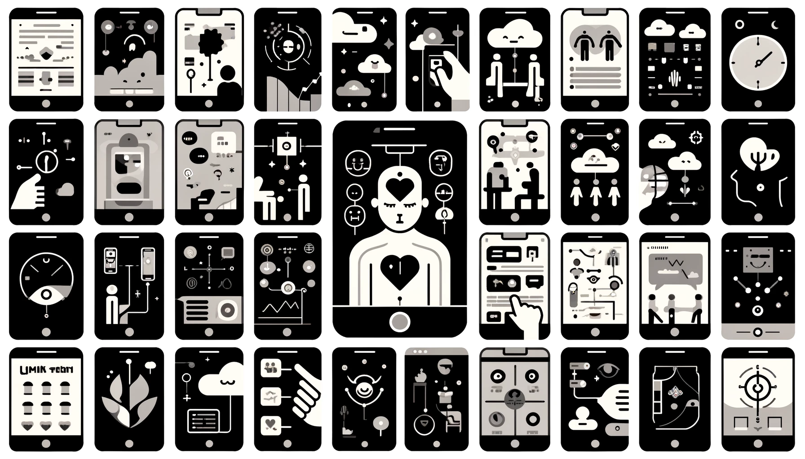

Workshop
Key Dates
- Submissions due: July 31st (extended), 2024 AoE
- Notifications sent: August 12th, 2024 AoE
- Camera-ready submission deadline: TBD
- Workshop date & time: TBD
Submission
Papers should be submitted via EasyChair.
About the Workshop
Mobile technologies have become integral to daily life, and understanding users' emotional states during interactions is crucial for enhancing user experience. However, the integration of affective perception, behavior analysis, and affective computing for mobile technologies presents multifaceted challenges, ranging from technological limitations to ethical considerations.
This workshop proposes a collaborative exploration of cutting-edge solutions for affective computing for mobile technologies. We aim to bring together experts to explore topics such as: user behavior analytics, user experience design, affective computing applications, cultural and contextual considerations, and the ethical implementation of affective computing.
This workshop aims to bring together researchers and practitioners from both academia and industry to identify and explore: 1) innovative solutions, 2) novel applications, and 3) key challenges in this area to drive research in the coming decade.
The long-term goal is to create a strong interdisciplinary research community that includes researchers and practitioners from HCI, HRI, Ubiquitous Computing, Cognitive Psychology, Mobile Technology, Interaction Techniques, User Privacy, and Design. We envision ongoing research collaborations and the acceleration of innovations in affective computing for mobile technologies.
In our workshop discussions, we will reflect on:
- Emotion Recognition for Mobile Technologies: Investigating techniques and algorithms for recognizing and understanding emotions based on user interactions, such as facial expressions or behavioral patterns.
- User Behavior and Emotional Responses: Analyzing how users' emotional states influence their behavior while interacting with mobile technologies, such as app usage patterns, response times, or engagement levels.
- Affective Computing Applications: Discussing practical applications of affective computing in mobile technologies, including personalized user interfaces, adaptive content delivery, or emotion-aware mobile apps.
- User Experience Design: Exploring how the integration of affective computing can enhance the overall user experience in mobile technologies by tailoring interfaces and interactions to users' emotional states.
- Privacy and Ethical Considerations: Addressing the ethical implications, including privacy concerns related to emotion data collection and potential misuse of emotional insights such as profiling.
- Technological Challenges and Solutions: Highlighting challenges associated with implementing affective computing on resource-constrained mobile technologies and proposing solutions or advancements in technology.
- Human-Robot Interaction (HRI): Investigating the impact of affective computing, particularly in the context of mobile robots, and discussing how emotional understanding can improve interaction with humans.
- Cultural and Contextual Considerations: Examining how cultural differences and contextual factors influence the effectiveness of affective computing algorithms and applications in diverse mobile user populations.